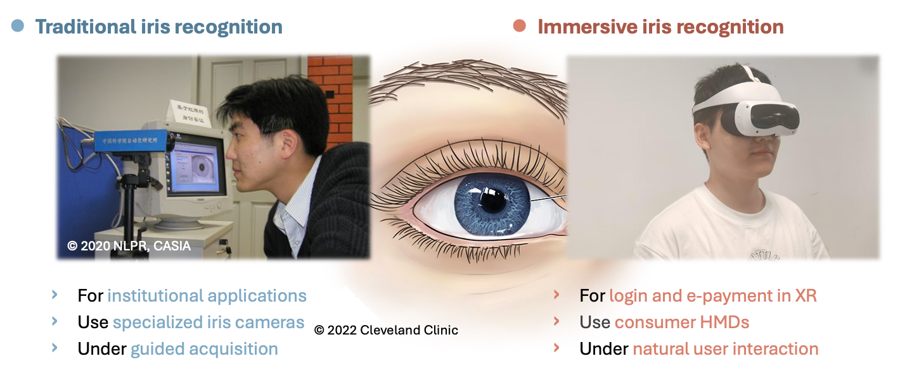
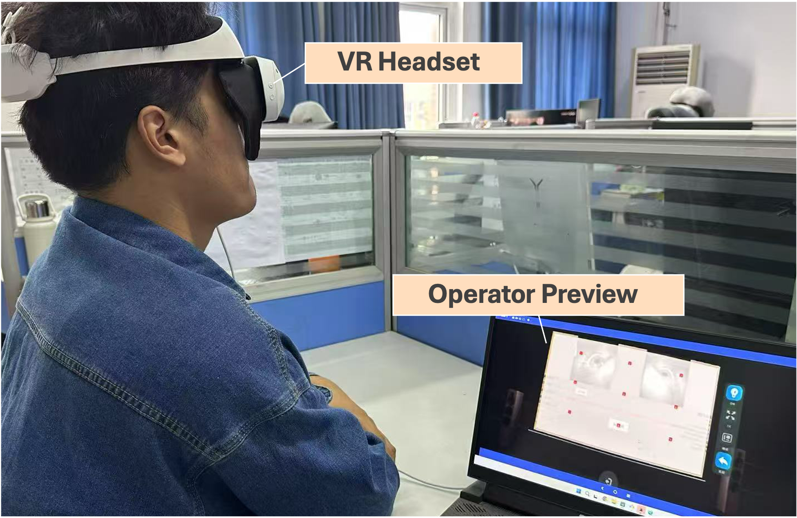
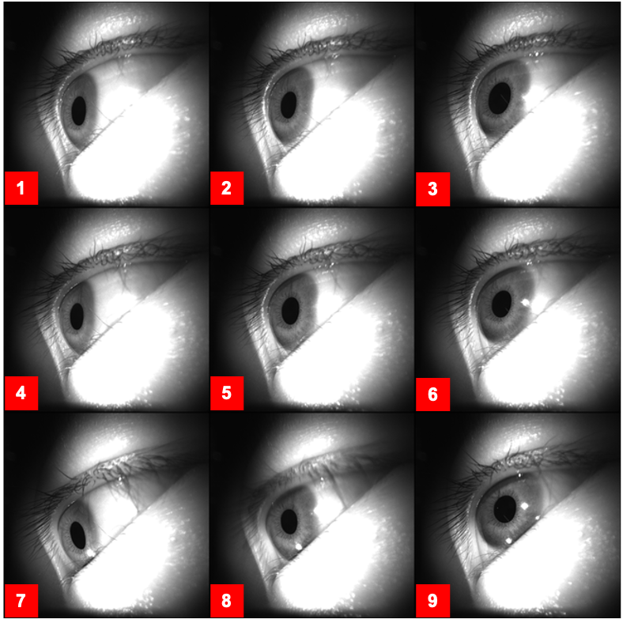
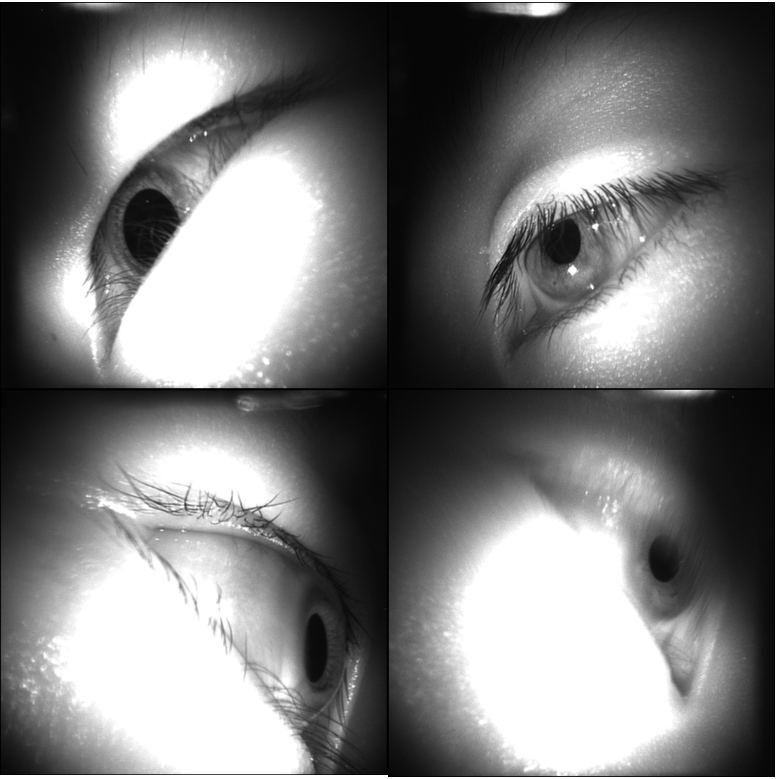
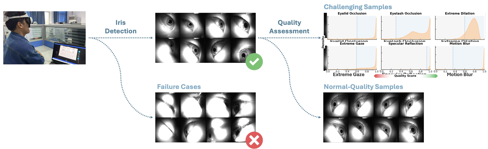
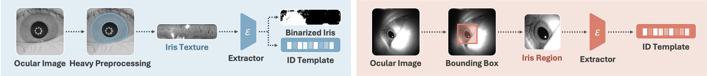
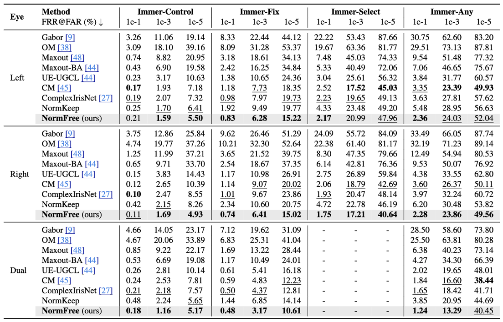
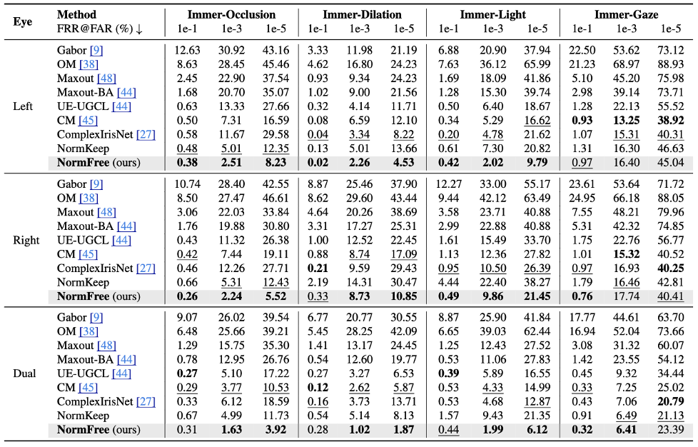
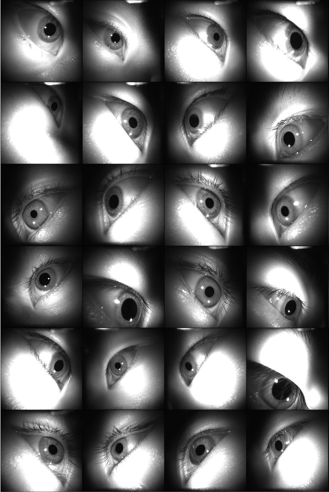
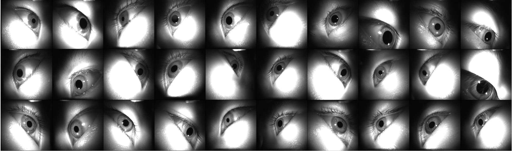

CVPR 2026 Oral · Award Candidate
ImmerIris
A large-scale public iris dataset for off-axis and unconstrained recognition in immersive XR applications.
CVPR 2026 Oral
Award Candidate
Dataset and Benchmark
499,791
ocular images
546
subjects
9 x 11
gaze by brightness
42%
challenging samples
8
protocols
Why It Matters
Iris recognition changes once the camera moves into a headset.
Traditional iris systems assume a frontal camera, guided acquisition, and cooperative users. In immersive applications, headset cameras capture ocular images from the side while users naturally move their gaze and experience changing illumination.
Dataset
Built for immersive recognition, not laboratory capture.
ImmerIris uses a VR headset to reproduce the visual geometry and user behavior of real XR interaction. The resulting images include perspective distortion, intra-subject variation, and quality degradation.

Headset Acquisition
A consumer HMD collects near-infrared ocular images with side-mounted cameras while subjects interact with a gaze-guided display.

Gaze Variation
Subjects fixate on a 3 by 3 grid, producing the off-axis changes that make immersive iris recognition difficult.

Open-Scene Quality
The benchmark retains realistic degradations, including occlusion, dilation, reflection, extreme gaze, and motion blur.
Dataset Access
Request access to ImmerIris.
The public release will be managed through a formal application form for research use. This entry point is ready for the official form link once it is available.
Cleaning and Annotation
From raw headset capture to benchmark-ready samples.
The pipeline removes severe failures, keeps normal-quality samples, and scores remaining images across six quality dimensions. These annotations drive protocols that isolate individual factors and combine them into realistic operating modes.
Eyelid and eyelash occlusion
Dilated pupil and extreme gaze
Specular reflection and motion blur

Benchmark
Eight protocols expose where current iris systems fail.
Occlusion
Tests partially covered iris texture from eyelids and eyelashes.
Dilation
Measures the effect of pupil expansion on surrounding iris texture.
Light
Pairs low- and high-brightness captures to reveal illumination shifts.
Gaze
Focuses on geometry changes caused by different gaze points.
Control
Off-axis capture with fixed gaze and normal-quality samples.
Fix
Fixed gaze with realistic quality degradations included.
Select
Natural gaze while excluding the most extreme gaze directions.
Any
Fully unconstrained pairing for open-scene immersive recognition.
NormFree
A simpler recognition path: crop the iris region and learn directly.
Instead of unwrapping the iris into a normalized texture, NormFree uses a robust bounding box crop and a face-recognition-style feature extractor trained with an angular-margin objective.

Results
Normalization-free learning stays competitive under immersive conditions.
Existing normalization-based methods degrade sharply as protocols become less constrained. NormFree ranks first or second in most verification settings and remains strong across identification protocols.


Sample Gallery
Off-axis ocular images reveal the real texture of the problem.


Citation
Reference
Yuxi Mi, Qiuyang Yuan, Zhizhou Zhong, Xuan Zhao, Jiaogen Zhou, Fubao Zhu, Jihong Guan, and Shuigeng Zhou. ImmerIris: A Large-Scale Dataset and Benchmark for Off-Axis and Unconstrained Iris Recognition in Immersive Applications. CVPR 2026.
@inproceedings{mi2026immeriris,
title = {ImmerIris: A Large-Scale Dataset and Benchmark for Off-Axis and Unconstrained Iris Recognition in Immersive Applications},
author = {Mi, Yuxi and Yuan, Qiuyang and Zhong, Zhizhou and Zhao, Xuan and Zhou, Jiaogen and Zhu, Fubao and Guan, Jihong and Zhou, Shuigeng},
booktitle = {Proceedings of the IEEE/CVF Conference on Computer Vision and Pattern Recognition},
year = {2026}
}